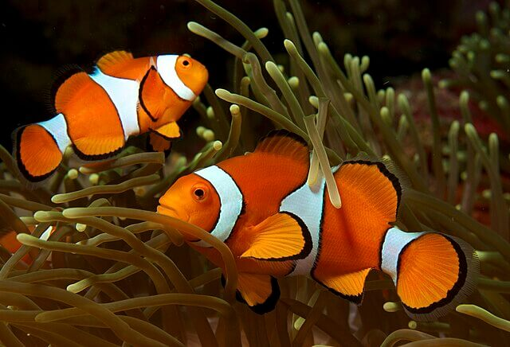

Clownfisk
Clownfisken är känd från filmen "Hitta Nemo" och lever i symbios med havsanemoner.
Här hittar du information om olika fiskarter, vackra bilder och ett bildspel som tar dig under ytan!
Clownfisken är känd från filmen "Hitta Nemo" och lever i symbios med havsanemoner.
Sjöhästen är en unik fisk som simmar vertikalt och där hanen bär ungarna.
En färgglad art som också medverkade i "Hitta Nemo" som karaktären Dory.
Har du frågor? Mejla oss på info@fiskvarlden.se.